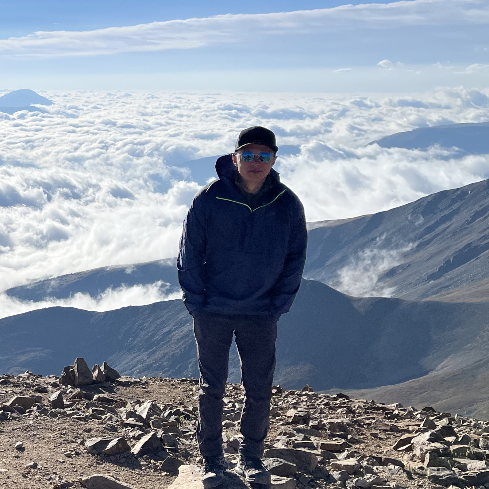

Jeremiah Corrado
Jeremiah is a member of the Chapel team at HPE. He is primarily focused on language features and stabilization. He has also made contributions to Arkouda, one of the largest open-source applications written in Chapel.
He received his M.S. in Electrical Engineering at Colorado State University where his research focused on improving Finite Element Analysis algorithms for applications in Electromagnetics. His areas of interest include: numerical methods, language design, and high performance computing.
Apart from working on Chapel, Jeremiah spends his time rock climbing, reading, and tinkering with electronics.
Articles by Jeremiah Corrado
-
Navier-Stokes in Chapel — Distributed Cavity-Flow Solver
Posted on November 14, 2024
Writing a distributed and parallel Navier-Stokes solver in Chapel, with an MPI performance comparison
-
Navier-Stokes in Chapel — Distributed Poisson Solver
Posted on October 28, 2024
Introduction to Chapel’s distributed programming concepts used in Navier-Stokes Simulation
-
Navier-Stokes in Chapel — 2D Simulations and Performance
Posted on July 9, 2024
An exploration of Chapel’s scientific computing capabilities using the CFD Python Tutorial and a C++/OpenMP performance comparison
-
Navier-Stokes in Chapel — Introduction
Posted on April 10, 2024
A starting point for applying Chapel to scientific computing problems using the CFD Python tutorial.
-
Changes to Chapel 2.0 Since its First Release Candidate
Posted on February 27, 2024
A summary of breaking and other notable additions made since Chapel 1.32
-
Advent of Code 2022, Day 12: On the Summit
Posted on December 19, 2022
A solution to day twelve of AoC 2022, covering atomic variables and recursive task parallelism
-
Advent of Code 2022, Day 9: Elvish String Theory
Posted on December 9, 2022
A solution to day nine of AoC 2022, covering select-statements, arrays, and math functions
-
Welcome to the Chapel blog!
Posted on November 30, 2022
An introduction to the Chapel blog, and our intentions and plans for it.